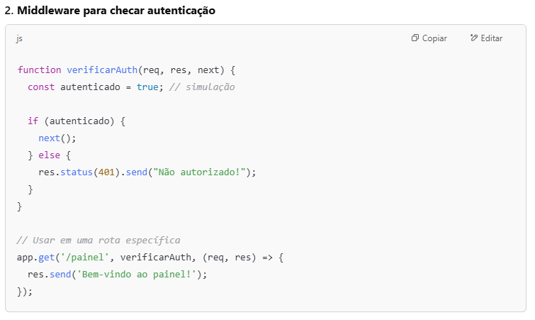

Middleware é um software quepermite a comunicação entre aplicativos e sistemas operacionais. Ele funcionacomo uma camada oculta que traduz e gerencia dados entre as aplicações.
Permitir que usuários enviem formulários em navegadores da web
Retornar páginas da web dinâmicas com base no perfil do usuário
Integrar diferentes tecnologias, ferramentas e bancos de dados em um único sistema
Processamento distribuído com ações em tempo real
Gerenciamento de transações
Autenticação de segurança
Filas de mensagens
O middleware abstrai o processo de comunicação entre componentes.
Ele fornece serviços que permitem que diferentes aplicativos se comuniquem por meio de estruturas de mensagens comuns.
Ele permite que componentes escritos em várias linguagens conversem entre si.
Ele oferece frameworks e runtimes leves para ambientes de nuvem altamente distribuídos.
Permite inovar mais rapidamente
Permite o desenvolvimento e a execução de aplicações em escala
Permite a comunicação entre ferramentas, linguagens e frameworks distintos
Permite a criação de aplicações sem criar uma integração personalizada
Esse código cria um middleware global que serve pra mostrar no console toda requisição que chega no servidor.
Esse código serve pra proteger uma rota, ou seja, só deixar acessar se o usuário estiver autenticado.
Autenticação de segurança
Gerenciamento de transações
Consultas de mensagens
Servidores de aplicativos
Servidores da web
Diretórios
Processamento distribuído